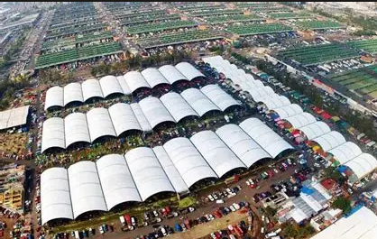

AbastoSoft nace con el objetivo de revolucionar la gestión de abastos. Somos proveedores directos de frutas y verduras frescas en la Central de Abastos y creadores de un ecosistema tecnológico diseñado para optimizar la logística y distribución comercial.

Conectar a productores, comerciantes y clientes finales mediante procesos eficientes, productos seleccionados de máxima frescura y herramientas digitales adaptadas al mercado real.
Ser el referente principal en la modernización de los centros de abasto a nivel regional, combinando la mejor tradición de suministro agrícola con innovación tecnológica de punta.
Transparencia en el pesaje y precios, compromiso con el agricultor local, calidad garantizada en cada entrega e innovación continua para nuestros clientes.